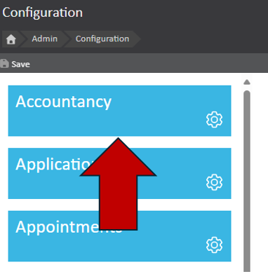
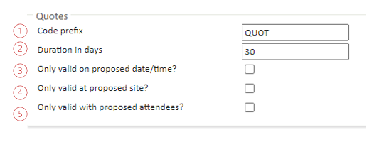
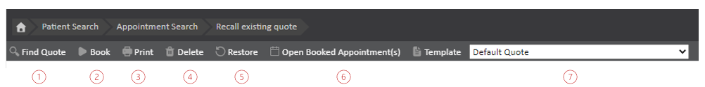
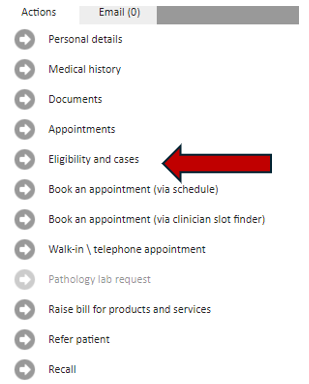
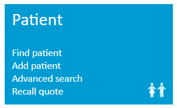
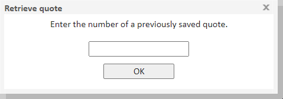
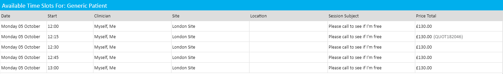

The Meddbase quote feature allows you to provide your patients with a bespoke quote to consider for appointments and services.
These quotes can be guaranteed and recalled for a specified period of time. Quotes can also be restricted to only allow patients to use this quote at a specific site, with a specific clinician, on a certain day, or a combination of all three.
Once a quote has been produced, Meddbase allows the user to book an appointment that satisfies the quote specification with ease.
This article will guide you through the steps to take to configure the quote system in your chamber, generate an appropriate quote, and book a relevant appointment from a quote that has been generated.
This article is split into the following sections:
To configure the quote system go to Start Page > Admin > Configuration and select the Accountancy tab.

Under the ‘Quote’ section you will find the following options:

1. Code Prefix – This code will prefix any quote numbers. You can either use the factory default ‘QUOT’ or a code more relevant to your practice.
2. Duration in Days – The number of days a quote is considered valid. Once the quote expires, it will no longer be possible to recall this quote.
3. Only Valid on Proposed Date? – If checked, proposed date is recorded in the quote and the quote is only valid on the proposed date
4. Only Valid at Proposed Site? – If checked, proposed site is recorded in the quote and the quote is only valid at the proposed site
5. Only Valid with Proposed Attendees? – If checked, doctor attendees are recorded in the quote and quote is only valid if they attend
A document template for the quote system will be included in your system by default; however, you may customise this if you wish.
More information about templates can be found here: Templates & Documents - An overview.
Once you have configured the settings for your quote system and customised the quote templates to your requirement, you may begin generating patient quotes.
Quotes are created through the slot finder.
More information about the slot finder can be found here: Booking an Appointment via the Slot Finder in Meddbase.
Use the slot finder to search for an appointment by specifying the appointment type, site and clinician to retrieve a list of available appointment slots. Once you have done this, select the preferred slot and click ‘Quote’ in the bottom right hand of your screen to create the quote and display the quote document.
The quote page will open in a new tab displaying the quote document to print for the patient.
On the quote page, you will find a toolbar which will help you navigate the quote page.

The tools contained here are:
1. Find Quote – Allows you to search for other quotes by using the Quote reference code.
2. Book – Launches the slot finder to book the quoted appointment.
3. Print – Print the quote template for the patient.
4. Delete – Deletes the quote (Deleted quotes can still be used to populate the service list in the slot finder) and also watermarks the quote document.
5. Restore – Restores the quote to an active state (if deleted).
6. Open Booked Appointment(s) – Opens appointments booked from a quote.
7. Template – A drop-down selector to choose between quote document templates.
There are two ways to retrieve and book from a quote. If you do not have a quote reference number, this is done from the patient record (1). If you do have a quote reference number, you can access the quote from the start page (2).
1. Navigate to the relevant patient record and click on 'Eligibility and cases'.

You will then need to find the relevant quote from the 'Quotes' section, and click on the relevant quote to open. This will take you to the quote page, where you can use the toolbar to book the appointment.
2. Navigate to Start Page > Patient > Recall Quote at which point you will be prompted to enter a quote reference code.


Once a quote has been retrieved using wither method, click 'Book' and the slot finder will launch with:
This will in turn generate a list of available appointment slot times that satisfy this quote.

Slots where the quote applies will show with the quote code to the right of the price total. If one of these quotes is selected the excess will be taken from the quote and applied to the patient.
Only the excess is stored in the quote for insured patients, any benefit maxima charged to insurance companies will be taken directly from the billing rules at the time of booking.
You may at this point continue to add services, which will be charged at the current rate rather than the quote rate. Once everything is finalised, booking proceeds as normal.
Once a booking has been completed this is recorded against the quote, as such, any further attempts to book an appointment using the same quote will alert the user.